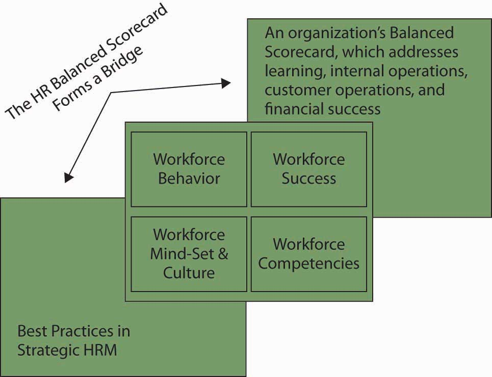

You may already be familiar with the Balanced Scorecard, a tool that helps managers measure what matters to a company. Developed by Robert Kaplan and David Norton, the Balanced ScorecardA framework designed to translate an organization’s vision and mission statements and overall business strategy into specific, quantifiable goals and objectives and to monitor the organization’s performance in terms of achieving these goals. helps managers define the performance categories that relate to the company’s strategy. The managers then translate those categories into metrics and track performance on those metrics. Besides traditional financial measures and quality measures, companies use employee performance measures to track their people’s knowledge, skills, and contribution to the company.Kaplan, R., & Norton, D. (1996). The Balanced Scorecard. Boston: Harvard Business School Press.
The employee performance aspects of Balanced Scorecards analyze employee capabilities, satisfaction, retention, and productivity. Companies also track whether employees are motivated (for example, the number of suggestions made and implemented by employees) and whether employee performance goals are aligned with company goals.
Because the Balanced Scorecard focuses on the strategy and metrics of the business, Mark Huselid and his colleagues took the Balanced Scorecard concept a step further and developed the HR and Workforce Scorecard to provide framework specific to HR. According to Huselid, the Workforce ScorecardAn application of the Balanced Scorecard concept to an organization’s human capital to identify and measure the behaviors, skills, mind-sets, and results required for the workforce to contribute to the company’s success. identifies and measures the behaviors, skills, mind-sets, and results required for the workforce to contribute to the company’s success. Specifically, as summarized in the figure, the Workforce Scorecard has four key sequential elements:Huselid, M., Becker, B., & Beatty, D. (2005). The workforce scorecard: Managing human capital to execute strategy. Boston: Harvard Business School Press.
Figure 16.10
The HR Balanced Scorecard bridges HR best practices and the firm’s comprehensive Balanced Scorecard.
Implementing the HR scorecard requires a change in perspective, from seeing people as a cost to seeing people as the company’s most important asset to be managed—human capitalThe collective sum of the attributes, life experience, knowledge, inventiveness, energy, and enthusiasm that its people choose to invest in their work.. According to the Society of Human Resource Management’s Research Quarterly, “A company’s human capital asset is the collective sum of the attributes, life experience, knowledge, inventiveness, energy and enthusiasm that its people choose to invest in their work.”Weatherly, L. (2003, March). Human capital—the elusive asset; measuring and managing human capital: A strategic imperative for HR. Research Quarterly, Society for Human Resource Management. Retrieved June 1, 2003, from http://www.shrm.org/research/quarterly/0301capital.pdf. As you can tell by the definition, such an asset is difficult to measure because it is intangible, and factors like “inventiveness” are subjective and open to interpretation. The challenge for managers, then, is to develop measurement systems that are more rigorous and provide a frame of reference. The metrics can range from activity-based (transactional) metrics to strategic ones. Transactional metrics are the easiest to measure and include counting the number of new people hired, fired, transferred, and promoted. The measures associated with these include the cost of each new hire, the length of time and cost associated with transferring an employee, and so forth. Typical ratios associated with transactional metrics include the training cost factor (total training cost divided by the employees trained) and training cost percentage (total training cost divided by operating expense).Saratoga Institute—2003 SHRM National Conference, as quoted in Weatherly, L. (2003). The value of people: The challenges and opportunities of human capital measurement and reporting. SHRM Research Quarterly, 3, 14–25. But, these transactional measures don’t get at the strategic issues, namely, whether the right employees are being trained and whether they are remembering and using what they learned. Measuring training effectiveness requires not only devising metrics but actually changing the nature of the training.
The Bank of Montreal has taken this step. “What we’re trying to do at the Bank of Montreal is to build learning into what it is that people are doing,” said Jim Rush of the Bank of Montreal’s Institute for Learning. “The difficulty with training as we once conceived it is that you’re taken off your job, you’re taken out of context, you’re taken away from those things that you’re currently working on, and you go through some kind of training. And then you’ve got to come back and begin to apply that. Well, you walk back to that environment and it hasn’t changed. It’s not supportive or conducive to you behaving in a different kind of way, so you revert back to the way you were, very naturally.” To overcome this, the bank conducts training such that teams bring in specific tasks on which they are working, so that they learn by doing. This removes the gap between learning in one context and applying it in another. The bank then looks at performance indices directly related to the bottom line. “If we take an entire business unit through a program designed to help them learn how to increase the market share of a particular product, we can look at market share and see if it improved after the training,” Rush said.Rush, J. (1995 July). Interview backgrounder for Fast Company.
Motorola has adopted a similar approach, using action learning in its Senior Executives Program. Action learning teams are assigned a specific project by Motorola’s CEO and are responsible for implementing the solutions they design. This approach not only educates the team members but also lets them implement the ideas, so they’re in a position to influence the organization. In this way, the training seamlessly supports Motorola’s goals.
As we can see in these examples, organizations need employees to apply the knowledge they have to activities that add value to the company. In planning and applying human capital measures, managers should use both retrospective (lagging) and prospective (leading) indicators. Lagging indicators are those that tell the company what it has accomplished (such as the Bank of Montreal’s documenting the effect that training had on a business unit’s performance). Leading indicators are forecasts that help an organization see where it is headed. Leading indicators include employee learning and growth indices.Weatherly, L. A. (2003). The value of people: The challenges and opportunities of human capital measurement and reporting. SHRM Research Quarterly, 3, 26–31.
Given the complexity of what we’ve just discussed, some managers may be inclined to ask, “Why bother doing all this?” Research by John Lingle and William Schiemann provides a clear answer: Companies that make a concerted effort to measure intangibles such as employee performance, innovation, and change in addition to measuring financial measures perform better. Lingle and Schiemann examined how executives measured six strategic performance areas: financial performance, operating efficiency, customer satisfaction, employee performance, innovation and change, and community/environment issues. To evaluate how carefully the measures were tracked, the researchers asked the executives, “How highly do you value the information in each strategic performance area?” and “Would you bet your job on the quality of the information on each of these areas?” The researchers found that the companies that paid the closest attention to the metrics and had the most credible information were the ones identified as industry leaders over the previous three years (74% of measurement-managed companies compared with 44% of others) and reported financial performance in the top one-third of their industry (83% compared with 52%).
The scorecard is vital because most organizations have much better control and accountability over their raw materials than they do over their workforce. For example, a retailer can quickly identify the source of a bad product, but the same retailer can’t identify a poor-quality manager whose negative attitude is poisoning morale and strategic execution.Becker, B., & Huselid, M. (2006). Strategic human resources management: Where do we go from here? Journal of Management, 32, 898–925.
Let’s translate the HR scorecard to your own Balanced Scorecard of human capital. As a reminder, the idea behind the HR scorecard is that if developmental attention is given to each area, then the organization will be more likely to be successful. In this case, however, you use the scorecard to better understand why you may or may not be effective in your current work setting. Your scorecard will comprise four sets of answers and activities.
This simple scorecard assessment will help you understand why your human capital is helping the organization or needs additional development itself. With such an assessment in hand, you can act to help the firm succeed and identify priority areas for personal growth, learning, and development.
The Balanced Scorecard, when applied to HR, helps managers align all HR activities with the company’s strategic goals. Assigning metrics to the activities lets managers track progress on goals and ensure that they are working toward strategic objectives. It adds rigor and lets managers quickly identify gaps. Companies that measure intangibles such as employee performance, innovation, and change perform better financially than companies that don’t use such metrics. Rather than investing equally in training for all jobs, a company should invest disproportionately more in developing the people in the key “strategic” (“A”) jobs of the company on which the company’s success is most dependent.